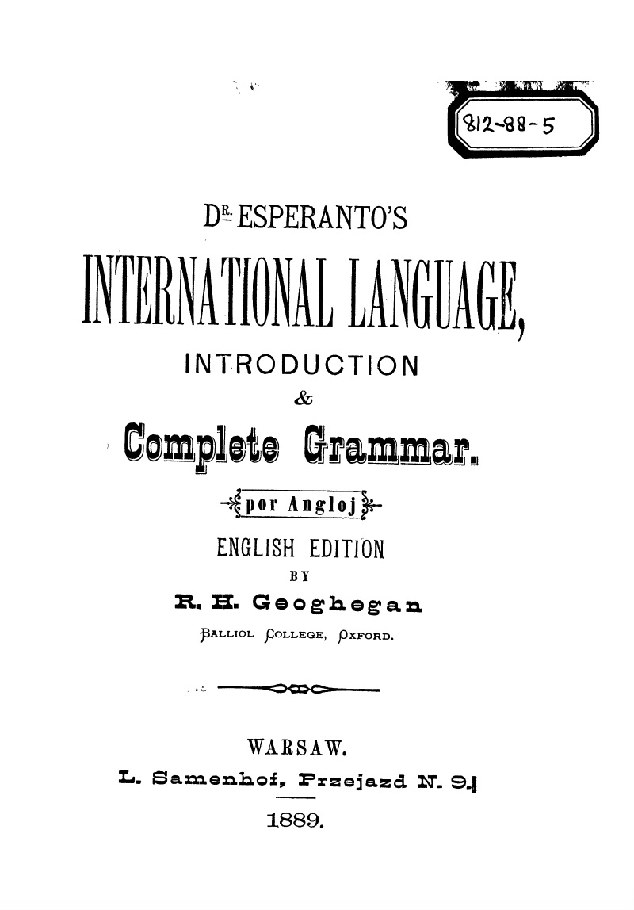
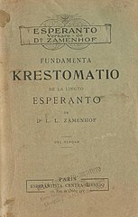
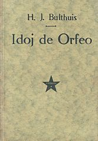
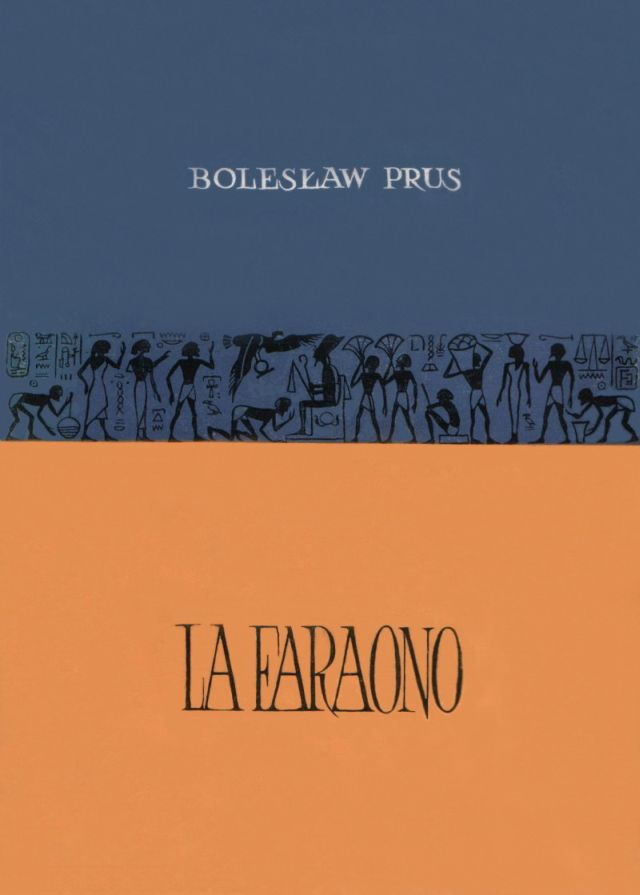
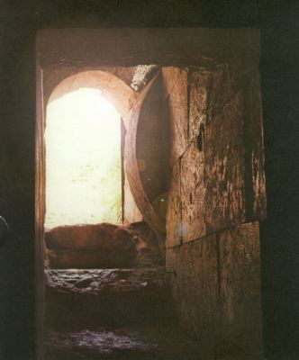

Librar’
Esperanto Hejmpaĝo
25 Noveloj
 Unua Libro (in English)

 Fundamento Krestomatio

 Idoj de Orfeo

 La Faraono

 La Sankta Biblio (kun aŭdo!)

Budhismaj Rakontoj (kun aŭdo!)
Serpentaj en la puto de István Nemere
Norda Naturo de Hilda Dresen
in: esperanto